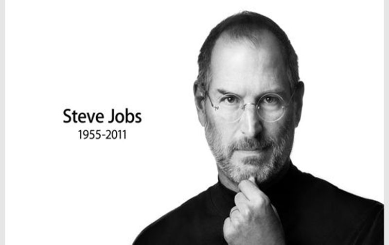

và những cống hiến của ông cho ngành Khoa Học Máy Tính
Giai đoạn 1997-2011.
- Trở lại Apple
Năm 1996, Apple tuyên bố sẽ mua NeXT với giá 429 triệu đô la Mỹ. Thoả thuận mua bán đạt được vào cuối năm 1996, đưa Jobs trở lại công ty mà ông là đồng sáng lập. Jobs trở thành người đứng đầu trên thực tế, sau đó tổng giám đốc điều hành Gil Amelio bị tước chức vào tháng 7. Ông chính thức mang danh là giám đốc điều hành tạm thời trong tháng 9 năm 1997. Tháng 3 năm 1998, nhằm tập trung cho việc thu lại lợi nhuận cho Apple, Jobs cho ngừng một số dự án như Newton, Cyberdog và OpenDoc. Trong những tháng tiếp theo, nhiều nhân viên có nỗi sợ hãi tăng dần khi gặp Jobs trong thang máy, "lo sợ rằng họ có thể không có một công việc làm khi cánh cửa mở ra. Thực tế là những hành quyết vắn tắt của Jobs hiếm khi xảy ra, nhưng một vài nạn nhân cũng đủ để khủng bố toàn bộ công ty." Jobs cũng thay đổi điều khoản trong bản quyền chế tạo các máy tính dòng Macintosh, khiến chúng trở nên quá tốn kém cho các nhà sản xuất tiếp tục chế tạo.
 Hình 9: Jobs trở lại phục hưng Apple
- Phục hưng Apple
Qua việc mua lại NeXT, hầu hết công nghệ của công ty được ứng dụng cho các sản phẩm của Apple, nổi bật nhất là NeXTSTEP, sau này đã trở thành hệ điều hành Mac OS X. Dưới sự chỉ huy của Jobs, công ty từng bước tăng doanh thu đáng kể qua việc ra mắt iMac và những sản phẩm mới khác. Kể từ đó, những thiết kế kế đầy sức hút và thương hiệu quyền lực vận hành trôi chảy phục vụ cho sự phát triển của Apple. Tại Triển lãm và Hội thảo Macworld 2000, Jobs chính thức từ bỏ chức vụ mang tính lâm thời và trở thành tổng giám đốc điều hành của Apple. Trong những năm gần đây, công ty đã mở rộng các chi nhánh, liên tục đưa ra giới thiệu và cải tiến những thiết bị kĩ thuật số tiên tiến. Bằng việc giới thiệu máy nghe nhạc cầm tay iPod, phần mềm nghe nhạc kĩ thuật số iTunes và iTunes Store, công ty đánh mạnh vào nhu cầu âm nhạc và điện tử phổ biến của người tiêu dùng. Năm 2007, Apple gia nhập thị trường điện thoại di động với sản phẩm iPhone, một loại điện thoại di động cảm ứng đa chạm, chứa đựng hầu hết các tính năng của iPod, có trình duyệt riêng dành cho điện thoại và màn hình.
- Những năm cuối đời
Hình 10: Jobs và Tim Cook
Những năm sau mọi người hầu như rất ít bắt gặp hình ảnh ủa Jobs thay vào đó CEO Tim Cook của Apple đã thay mặt Jobs xử lý các công việc hàng ngày tại công ty trong thời gian phục hồi của Jobs. Apple cho biết Jobs sẽ vẫn tham gia vào việc đưa ra những quyết định chiến lược quan trọng của Apple. Tháng 1/2011 - Apple thông báo Jobs xin nghỉ để điều trị y tế mà không đưa ra lý do nào cụ thể. Những câu hỏi về sự nghiêm trọng của tình hình sức khỏe Jobs lại dấy lên, ảnh hưởng không nhỏ đến giá cổ phiếu, việc phát triển sản phẩm và các hoạt động kinh doanh của Apple. Tháng 8/2011 - Jobs thông báo ông sẽ từ chức khỏi chiếc ghế Giám đốc điều hành của Apple và Tim Cook sẽ đảm nhiệm vị trí này. Jobs chỉ đảm nhận vai trò Chủ tịch hội đồng quản trị của công ty. Vào ngày 5/10/2011 - Steve Jobs qua đời ở tuổi 56.